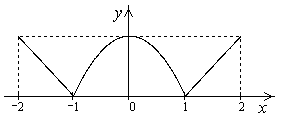

П 14.№3.
Изобразите график функции
РЕШЕНИЕ:
На полуинтервале функция имеет вид смещенной параболы, ветви которой направлены вниз. Вне этого полуинтервала , т.е. опущенный на 1 вниз стандартный график
Ответ:
